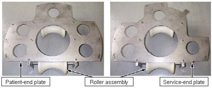
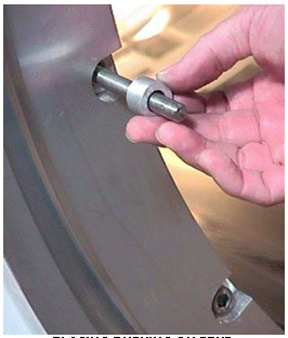
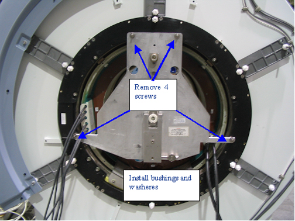
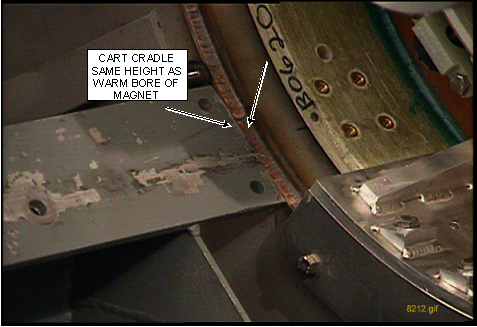
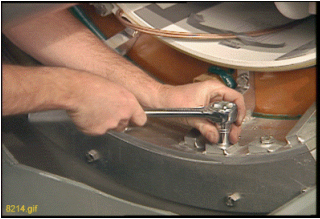

- 00000018WIA30695F20GYZ
- id_131059971.7
- Jul 5, 2019 11:18:59 PM
Defective Gradient Coil Removal
Prerequisites
| Required persons | Preliminary requirements | Procedure | Finalization |
|---|---|---|---|
| 3 | Not Applicable | 3-5 Hours hours | Not Applicable |
| Item | Quantity | Effectivity | Part number | Manufacturer |
|---|---|---|---|---|
| Non-magnetic Tool Kit | 1 | - |
46-320273G4 | - |
| Gradient Insertion Tool Kit | 1 | - |
2164744-5 or greater | - |
| BRM/BRM-D/CRM Cart | 1 | - |
2134810 | - |
| Aluminum Cradle | 1 | - |
2134810-2 | - |
| Cable Crimper/Stripper Kit | 1 | - |
2134776 | - |
| Poron Seal, for air cover | 1 | - |
2185175 | - |
| Poron Seal | 4 | - |
2181231 | - |
| Poron Seal | 8 | - |
2181231-2 | - |
| Splice kit | 1 | - |
2241521 | - |
| Shim tray extraction tool | 1 | - |
5325761 | - |
| Item | Quantity | Effectivity | Part number | Manufacturer |
|---|---|---|---|---|
| Red Loctite # 271 | 1 | - |
46-170686p3 | - |
| Blue Loctite # 242 | 1 | - |
46-170684p2 | - |
| Never Seeze | 1 | - |
46-294151P8 | - |
| Tie Wraps | 5 | - |
- | - |
| ||||||||||||||||||||||||
| Condition | Reference | Effectivity |
|---|---|---|
|
Perform the procedures listed in Pre-Requisite Procedures. | - | - |
|
(Only for RD series magnet) If the magnet is ramped, remove all passive shim trays from the coil prior to the installation and store them in a safe place. Passive shim trays are highly ferrous. Heed all warnings in Safety section above. | - | - |
About this task
Overview
It is strongly recommended that the 38-minute video tape (P/N EVT624) of an actual BRM replacement be reviewed before attempting this complex procedure. The video tape entitled, “New BRM Installation Procedure for Conquest CX Magnet,” will be shipped with the BRM Insertion Tool Kit required to perform this replacement.
The replacement of a CRM or BRM-D is identical to the BRM except where noted in this procedure. Contact your Zone MAC Team representative to identify an individual trained to assist with this procedure. This procedure describes the removal and replacement of the combined RF and Gradient Body Coils in the various Signa Horizon systems with Cx, LCC, and WideOpen Enclosure Magnets.
Lock-Out Tag-out
About this task
Perform Lockout / Tagout for System Cabinet PDU Main Breaker .
Using Gradient Insertion Tool
About this task
Changes were made to the Gradient Insertion tool, part 2164744-6 and greater (such as 2164744-7). Use the parts noted below when replacing either the BRM or TRM.
Procedure
- Attach plates 5161983 and 5161985 to either the BRM or TRM gradient
coil. Secure to gradient coil using M10 x 80 studs (locations shown
below). Thread the studs at least 1/4 inch (6 mm) into the coil. The
CRM gradient coil will have two separate plates (P/N 2187590).
Figure 1. Gradient Mounting Plates 
- Attach Rear Plate to the magnet as shown below. There are standoffs
on this plate that should remain in place. Secure Rear Plate to magnet
using M10 x 80 studs, washers and M10 nut.
Figure 2. Attaching Rear Plate to Magnet 
- Obtain the Male Insertion Tube (2284929) and XRMB Tube Standoff
(5191626).
- Attach the Tube Standoff to the Male Insertion Tube using the 4-inch, 0.375-16 UNC Hex Socket Screw (5303993) included in the Gradient Coil Insertion and Lift Kit.
- Once the Standoff is secured to the Tube, attach the Tube Pilot
Shaft to the Standoff as shown below.
Figure 3. Attaching Standoff to Insertion Tube 
Gradient Coil Replacement
Procedure
Remove the air seal (shown below) from around the Gradient Coil.Notice Figure 4. Remove Airseal 
- Remove the two Tube Guide Roller Assemblies from the crate. (It may be necessary to exchange the rollers to the appropriate BRM or CRM Plate Assembly).
Figure 7. Tube Guide Roller Assembly 
- Install one Assembled Tube Guide Roller Assembly onto each end
of the Gradient Coil as shown.
Figure 8. Install Tube Guide Roller Assembly 
- The kit contains two M10 x 120 studs. Insert each stud at least
1/4 in. (6 mm) into the Gradient Insertion Tool at the top hole location.
(The stud will support the Tube Guide Roller Assembly and will assist
the alignment of the remaining bolts.)Note:
If using Gradient Insertion Tool (P/N 2164744-6 or greater), use Mounting Plates (P/N 5161983 and 5161985) shown below.
Figure 9. Gradient Plates for 2164744-6 or Greater 
- Use the M10 x 80 bolts, supplied in the kit, to secure the studs
using a 17 mm socket and ratchet.Note:
Each assembly requires four bolts and one stud.
- Install one Assembled Tube Guide Roller Assembly onto each end
of the Gradient Coil as shown.
- Remove the Tube Support Plate Assembly from the crate.
Figure 10. Tube Support Plate Assembly 
- Adjust the Alignment Bearing for center position as viewed from
the side with the round cut out.
Figure 11. Alignment Bearing to Center Position  Note:
Note:Use an adjustable wrench for the vertical adjustment for older Gradient Insertion Kits. Newer kits contain a wrench.
-
For the vertical adjustment a clockwise rotation results in the alignment bearing moving down.
-
For the horizontal adjustment a clockwise rotation results in the alignment bearing moving to the left. Use the 3/8 in. (12 mm) T-bar Allen wrench for the horizontal adjustment.
-
- If using Gradient Insertion Tool (2164744-6 or greater), use the Tube Support Plate shown below.
Figure 12. Tube Support Plate for Gradient Insertion Tool 
Notice
- Adjust the Alignment Bearing for center position as viewed from
the side with the round cut out.
- To properly install the Tube Support Plate Assembly onto an
HDx magnet with a Metallic Turtle Bracket:
- Remove four screws from the Turtle Bracket so the Tube Support
Plate can be installed.
Figure 13. Metallic Turtle Bracket 
- Install four of the M10 x 60 studs into the Turtle Bracket openings from which the screws were removed. Place Never Seeze, P/N 46-294151P8 onto the studs that will thread into the magnet.
Place bushings on all four studs in all locations as shown.Notice Figure 14. Tightening Stud 
- Tighten the stud that will support the weight of the Tube Support
Plate Assembly, then tighten the nut onto the stud as shown below.
Next, proceed to Step 9.
Figure 15. Placing Bushing on Stud 
- Remove four screws from the Turtle Bracket so the Tube Support
Plate can be installed.
- To properly install the Tube Support Plate Assembly onto an
HDx magnet with a Black or Molded Turtle Bracket:
- Remove four screws from the Turtle Bracket so the Tube Support Plate can be installed.
- Install four of the M10 x 60 studs into the Turtle Bracket openings
from which the screws were removed. Place Never Seeze, P/N 46-294151P8
onto the studs that will thread into the magnet.
Figure 16. HDx Magnet with Molded or Black Turtle Ring 
Place a washer and bushing at the locations shown above and below.Notice Figure 17. Installation of Bushing and Washer 
- Tighten the stud that will support the weight of the Tube Support Plate Assembly, see Figure 14that will support the weight of the Tube Support Plate Assembly.
- Attach Tube Support Plate to the magnet as shown. (Studs are
not needed when using this plate since standoffs are built into the
plate.)
Figure 19. Tube Support Plate Attached to Magnet 
- Install the cotter pin after the shaft is in place as shown
below.
Figure 20. Cotter Pin Installation 
Remove the Female Tube Assembly from the crate. Support the Female Tube Assembly on the Tube Jack Assembly, then thread it onto the Male Tube Assembly.Warning 
Remove the Gradient Coil Cradle Fasteners (two per side) from the cradle as shown.Warning Figure 23. Removing Gradient Coil Cradle Fasteners 
- Use a 19 mm socket to adjust the height so the end of the cart
cradle is the same height as the warm bore of the magnet and flush
against the end flange as shown in Figure 25.
Figure 24. Adjusting Cart Cradle Height 
Figure 25. Adjusting Cart Height to Warm Bore Height 
- Note:Go to the rear of the magnet. Adjust the Alignment Bearing in the vertical direction, and watch for the tube to make contact with the upper roller on the rear Tube Guide Roller Assembly. (See Figure 26.
Make sure there is a small amount of resistance to the upward movement of the tube. The top roller should not be able to rotate.
Figure 26. Adjusting Alignment Bearing  Note:
Note:Make sure there is a small amount of resistance to the upward movement of the tube. The top roller should not be able to rotate.
- If the bolts are present: Go to the front of the magnet. Loosen
and remove the four bolts from the Gradient Coil bracket that attaches
it to the end flange bracket using a 17 mm socket and ratchet.
Figure 27. Removing Bolts from Gradient Coil Bracket 
Note:Some magnets have rubber pads installed between the Gradient Coil Bracket and the Magnet End Flange Bracket as shown below. This configuration utilizes special hardware, and does not use the mounting bolts.
Figure 28. Gradient Isolation Configuration 
Before removing the rollers, make sure the shipping bracket holes for the Gradient Coil will line up with the holes on the cradle of the cart.Notice -
The BRM, BRM-D and CRM each have unique holes in the cart for shipping. Be sure to align the BRM, BRM-D or CRM to the respective holes on the shipping cart.
-
It may be necessary to rotate the Gradient Coil and/or move forward or back on the cradle to align the holes. (An installed shipping block is shown below.)
Figure 30. Installed Gradient Coil Shipping Blocks  Note:
Note:The Aluminum Cradle for BRM (2134810-3), used to replace a BRM in a CX magnet, must be modified for the longer CRM. Additional front and rear stop block mounting holes (labeled “C” for “CRM”) are being added to the aluminum cradles sent with BRM and CRM FRUs from headquarters. Field cradles returned with failed BRMs and CRMs will also be upgraded by manufacturing as necessary. If an unmodified service aluminum cradle will be used to return a failed CRM, it must be field modified per Figure 31, before shipment.
Figure 31. Coil Cradle Mounting Holes 
-
Remove the front and rear spacers on the Gradient Coil being careful not to interchange them. The front spacer must go on the front location of the replacement coil. (The location of an installed spacer is shown.)Notice Figure 32. Spacer Location 
- Remove the Gradient Coil Roller Bracket Assemblies as shown.
Figure 33. Removing BRM Roller Bracket Assemblies 
Adjust the cart height and the vertical adjustment of the Alignment Bearing to remove the load from the top rollers inside the Gradient Coil.Notice Figure 34. Damaged Alignment Bearing 
- For the BRM-D and CRM Coils, loop the long gradient cables inside
the gradient and tie-wrap them to prevent damage during shipment as
shown in the two illustrations below.
Figure 35. Cables Tie-Wrapped Inside Coils 
Figure 36. Tie-Wrapped Cables